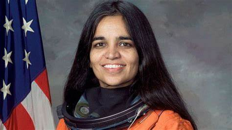

"The journey matters as much as the goal!"
Kalpana Chawla, PhD, was an engineer, pilot, and astronaut who spent more than 30 days in space over two Space Shuttle missions! Chawla was born in Karnal, India, and was fascinated by flight since her childhood. She earned a bachelor’s degree in aeronautical engineering from Panjab Engineering College, a master’s degree in aerospace engineering from the University of Texas-Arlington, and a PhD in aerospace engineering from the University of Colorado-Boulder. Chawla held numerous pilot licenses, including for airplanes, gliders, and seaplanes. After completing her PhD in 1988, Chawla joined NASA’s Ames Research Center, where she specialized in the fluid dynamics of aircraft. She later continued aerodynamics research in the private sector. In 1991 Chawla became a United States citizen. NASA selected Chawla as an astronaut in late 1994 and she began astronaut training in 1995. In addition to preparing for spaceflight, astronauts are also tasked with ground-based technical projects. She set a mighty example for being courageous, dedicated, and an independent woman who set her eyes on space and followed through with her dream. Image: Flickr Born in Karnal district in Haryana, Kalpana was interested in aeronautical engineering from an early age and did all she could to pursue her dreams, no mean feat in a society where engineers are overwhelming male. Moving to the US helped her earn a Master’s and a Doctorate in her chosen field. Kalpana worked at NASA for seven years before becoming an astronaut in March 1995. She took off on her maiden flight in November 1997. As the first Indian woman and only the second Indian in history to fly in space, Kalpana broke all kinds of barriers and inspired a whole new generation of young girls and women to look to the stars. On her 15th death anniversary, we remember the lessons taught by a woman who believed no challenge was too big, and who refused to let fear of the unknown stop her from succeeding. No dream is too big When Kalpana was a kid, she would gaze at the stars with her siblings. Right then she made up her mind to unravel the questions of time and space. She once said, “Times like those gave me the opportunity to wonder and ask all those very basic questions. That sense of awe for the heavens started there.” This awe would lead her to overcome all obstacles in her way. At a time when women were still finding it hard to voice their opinions at home and even at work, Kalpana set records and broke glass ceilings everywhere. Unbridled by her status as a woman, she always persuaded people to conquer their dreams and strive on. “I’ve always been very determined. I don’t get easily discouraged.” “I never truly thought of being the first or second someone. Or being a small-town girl. This is just something I wanted to do. It was very important for me to enjoy it.” “If you want to do something, what does it matter where you are ranked? Nor does being a woman make a difference.” Enjoy the journey While focused on achieving her dreams, Kalpana was also mindful of making the most of her time getting there. She firmly believed in witnessing, experiencing, and enjoying the journey of reaching one’s goals. Often, the pursuit seems like an insurmountable task which forces many to forget to enjoy the path there. If we ensure to make the most of every step of the journey, reaching the destination will not only be easier – it will also be more fun. “Do something because you really want to do it. If you’re doing it just for the goal and don’t enjoy the path, then I think you’re cheating yourself.” While focused on achieving her dreams, Kalpana was also mindful of making the most of her time getting there. She firmly believed in witnessing, experiencing, and enjoying the journey of reaching one’s goals. Often, the pursuit seems like an insurmountable task which forces many to forget to enjoy the path there. If we ensure to make the most of every step of the journey, reaching the destination will not only be easier – it will also be more fun. “Do something because you really want to do it. If you’re doing it just for the goal and don’t enjoy the path, then I think you’re cheating yourself.” In December 1994, Kalpana Chawla reported to the Johnson Space Center in March 1995 as an astronaut candidate in the 15th Group of Astronauts. The rest, as they say, is history. In November 1996, she was assigned as mission specialist and prime robotic arm operator on space shuttle STS-87 (November 19 to December 5, 1997).